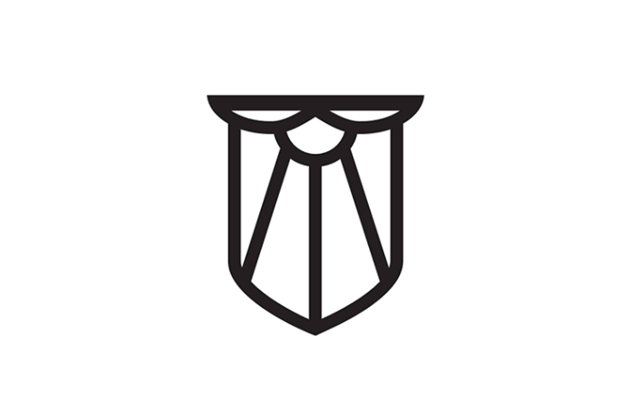
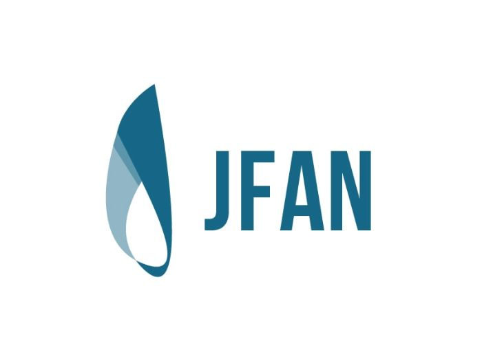

Logos & Marks

Secondary mark for Bearded Lady Coffee Roasters for packaging and marketing use
Logo for Young Adults group. The theme of the group was based on woodlands and the outdoors

Primary logo mark for Bearded Lady Coffee Roasters

Logo for Federalist Society
Concept for Fictional fitness magazine

Unused logo for Joplin Food Action Network

Logo for 2019 Downtown Joplin Association's annual chili competition